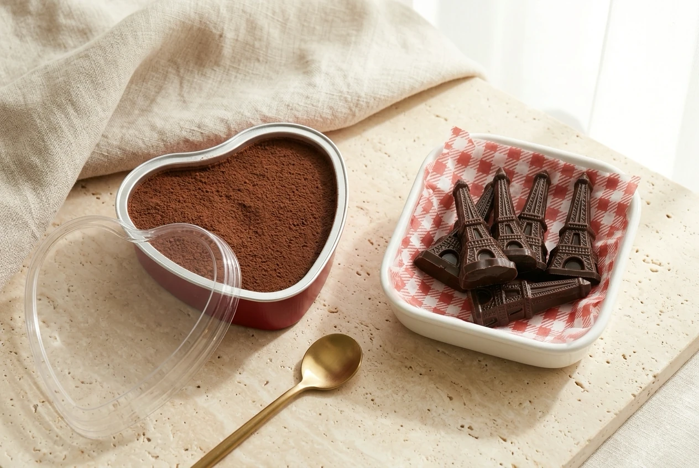
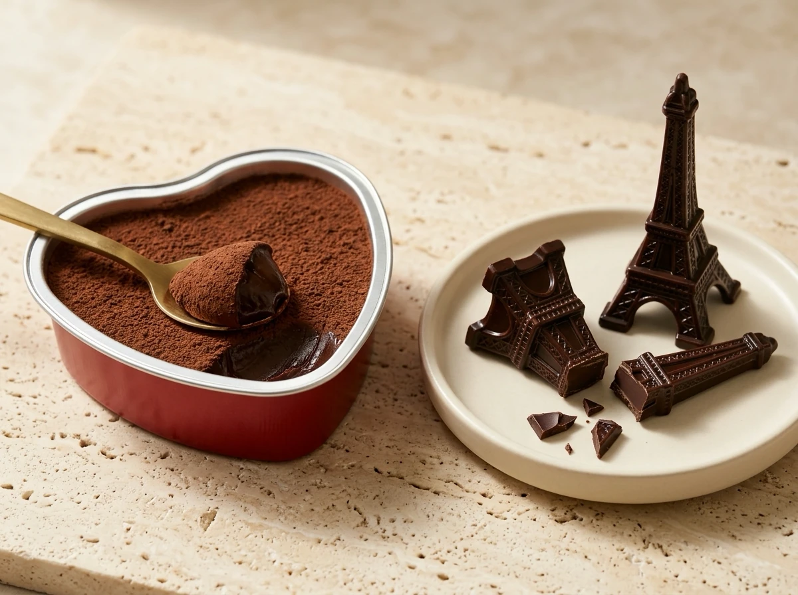
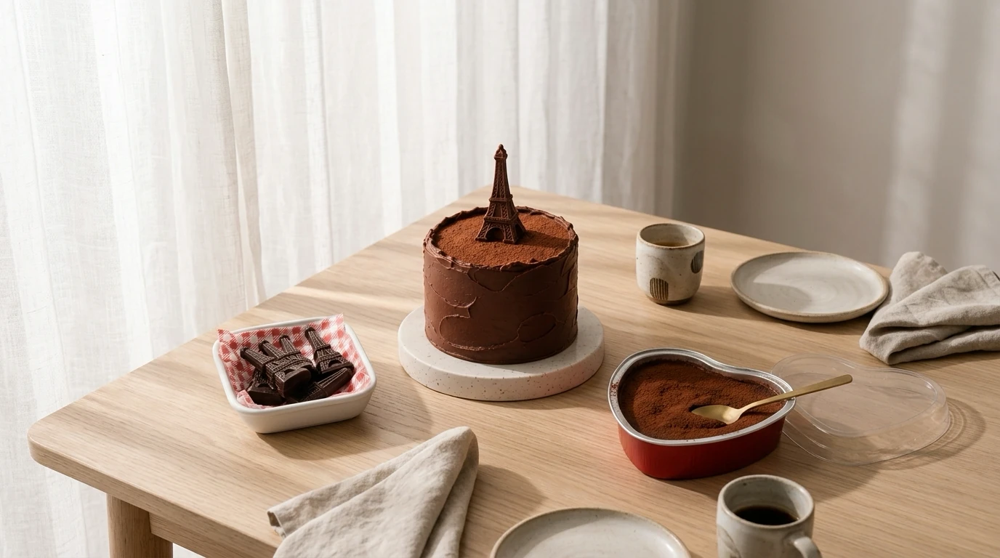

VERYGOOD JOURNAL · CHOCOLATE GIFTS · ADD-ONS & GIFTING GUIDE
How our 100g Pavé Chocolate Heart Tin and 6-piece Eiffel Tower Chocolate work as standalone gifts, 5+1 sharing bundles, and effortless cake add-ons in Sydney.
Even when two chocolates begin with the exact same chocolatier-grade dark couverture,[27] how the chocolate is finished changes everything—from how it melts on your tongue to how you carry it across Sydney and style it on a celebration table.
Our Pavé Chocolate Heart Tin 100g is a chilled, velvety fresh ganache emulsion made to scoop slowly,[20] while our 6-piece Eiffel Tower Chocolate is crisp tempered couverture built for a clean snap and instant cake-topper charm.[28]
KEY TAKEAWAY · CHILLED VELVET VS. AMBIENT CRISP SNAP
Choose the Pavé Heart Tin 100g for chilled melt-in-the-mouth fresh ganache, or Eiffel Tower Chocolate (6 pieces) for easy ambient gifting and edible cake toppers—both available individually, in 5+1 bundles, or as cake add-ons.

Understanding the craft difference between a fresh cream-chocolate emulsion[20] and solid tempered couverture[27][28] makes matching the right box to your recipient and weather effortless:
CHOCOLATE CRAFT · FRESH GANACHE EMULSION VS. TEMPERED SOLID COUVERTURE
CHILLED VELVET · 100G HEART TIN
Pavé Chocolate · Heart Tin 100g
Dark couverture emulsified with fresh cream[20] and dusted in cocoa powder inside a red heart tin. Glides smoothly off a small spoon with a cool truffle-like melt.
Keep refrigerated (5 °C or below); also in 5+1 bundle.
Both chocolates flex seamlessly from a single thank-you gesture to multi-recipient gifting. Ordering our 5+1 sharing bundles—six 100g Pavé Heart Tins or six packs (36 pieces) of Eiffel Tower Chocolate—turns teacher gifts, client drops and seasonal thank-yous into one effortless pickup.
Already ordering a Pavé Whole Cake, Brownie Basque Cheesecake or Gâteau Loaf? Both chocolates also sit in our cake add-on lineup (alongside Almond Chocolate 80g and Separate Vanilla Cream 100g box), letting you stand a chocolate Eiffel Tower right on top of your cake or spoon extra pavé beside each slice.

HOW TO ORDER · SINGLE GIFTS, 5+1 BUNDLES & CAKE ADD-ONS
SINGLE PACK · EVERYDAY GIFT
Thoughtful One-Off Gestures
Pick a red Heart Tin 100g for anniversaries and date nights, or a 6-piece Eiffel Tower pack for playful dinner-host and teacher gifts.
5+1 BUNDLE · SIX PACKS
Team & Holiday Sharing
Choose 100g × 6 Pavé Heart Tins (5+1) or 6 packs / 36 pieces of Eiffel Tower Chocolate (5+1) for clients, offices and seasonal gifting.
CAKE ADD-ON · TABLE UPGRADE
Edible Toppers & Extra Ganache
Stand one Eiffel Tower atop your Pavé cake and share five more at the table—or add a 100g Pavé tin alongside cake slices.
Because fresh cream ganache and solid tempered couverture prefer different temperatures, following two quick storage rules keeps both chocolates tasting freshly made:
SYDNEY CHOCOLATE CARE · THREE ESSENTIAL HABITS
• Refrigerate Pavé Heart Tins (5 °C or below): Fresh cream ganache is chilled—carry in an insulated cooler bag on warm Sydney drives, and let sit 5 minutes in a cool room before spooning.[7][24]
• Store Eiffel Tower Chocolates cool and dry (15–18 °C): Keep tempered solid couverture away from direct sunlight and kitchen heat; shade in a cool bag on hot days and avoid fridge condensation.[7][25]
• Place your edible topper just before serving: Stand an Eiffel Tower Chocolate atop your chilled Pavé cake or loaf right before bringing it to the table so its glossy finish stays crisp.[25]
ALLERGEN & DIETARY REMINDER · FSANZ TRANSPARENCY
Our Pavé Chocolate Heart Tins and Eiffel Tower Chocolates involve dairy and soy ingredients and are prepared in a kitchen that also handles nuts, wheat, eggs and sesame. Please confirm full allergen details with our team before gifting to someone with a food allergy.[23]

VERYGOOD CHOCOLATE · MELROSE PARK PICKUP · SYDNEY
Explore Pavé Chocolate Heart Tins and Eiffel Tower Chocolate in single packs or 5+1 sharing bundles—or add them directly to your next cake order for pre-arranged pickup in Melrose Park, Sydney.
[7] https://www.foodstandards.gov.au/business/food-safety/transporting-food-safely — FSANZ — Transporting food safely
[20] https://www.valrhona.com/en/l-ecole-valrhona/discover-l-ecole-valrhona/chocolate-terminology/chocolate-emulsion — Valrhona — Chocolate emulsion
[23] https://www.foodstandards.gov.au/consumer/labelling/allergen-labelling — FSANZ — Allergen labelling for consumers
[24] https://www.foodstandards.gov.au/business/food-safety/2-hour-4-hour-rule — FSANZ — 2-hour / 4-hour rule
[25] https://haighschocolates.com.au/how-to-care-for-your-chocolate — Haigh’s Chocolates Australia — How to care for your chocolate
[27] https://www.valrhona.com/en/l-ecole-valrhona/discover-l-ecole-valrhona/chocolate-terminology/couverture-chocolate — Valrhona — Couverture chocolate
[28] https://www.callebaut.com/en/chocolate-video/technique/tempering — Callebaut — Tempering chocolate